Locații de nuntă în județul Arad
- locații în director
- 24
- cu cazare în registrul SITUR
- 14
- medie ponderată Google
- 4,4 / 5
- evaluări Google
- 15.985
Cum alegi unde mergi la vizionare
Pentru o petrecere cu invitați din Arad, merită puse pe aceeași listă o adresă din oraș și una din Fântânele. Trimiteți ambelor echipe aceeași cerere, cu un număr pentru scaunele de ceremonie și altul pentru mesele de seară. Astfel puteți compara două amenajări diferite.
Printre adresele selectate în Arad sunt și pensiuni. Parcarea proprie menționată de un vizitator poate rezolva sosirea rudelor care rămân peste noapte. Pentru un grup adus din Fântânele, discutați și unde poate întoarce microbuzul. Dacă aceeași curte apare în fotografii și ca parcare, cereți să fie marcată porțiunea care rămâne liberă în timpul mesei.
Două adrese pentru o zi de vizionări
Pe hartă, între aceste două proprietăți sunt 4,9 km în linie dreaptă. Deschide indicațiile de drum din fișe ca să vezi traseul pe șosea înainte de a stabili a doua întâlnire.
- Castelul Kövér-Appel · Strada Principală 116, 317120 Fântânele
- Pensiunea Larisa · Strada Ștefan cel Mare 13A, 310237 Arad
Explorează după localitate
Toate locațiile din județul Arad
Ordinea ține cont de nota Google și de numărul evaluărilor. Cum calculăm ordinea
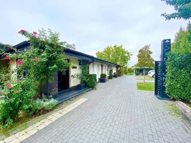
Fotografie a locației · Sursa fotografiei Arad · Pensiune
Pensiunea Damir - Cazare Arad - Pensiune Arad
Pensiunea Damir - Cazare Arad - Pensiune Arad. La Damir, un client a găsit în cameră pliante de la restaurante care livrează mâncare la pensiune.
Calea Radnei 227-229, 317405 Arad+40 749 912 912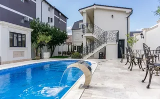
Fotografie a locației · Sursa fotografiei Arad · Hotel
Grant Hotel Boutique
Hotel boutique în Arad cu piscină exterioară și camere între 500 și 800 de lei. O taxă de fotografiere de 1.000 de lei și alte detalii de verificat.
Strada Fulgerului 24, 310346 Arad+40 740 028 815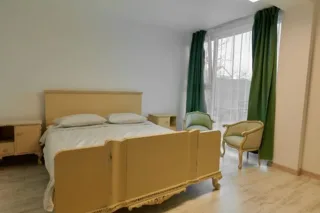
Fotografie a locației · Sursa fotografiei Arad · Pensiune
Arada-Pensiune Arada - cazare Arad -Pensiune Arad
Pensiune fără restaurant pe Calea Radnei 197A, Arad: camere la parter, curte păzită, nota 4,8. Ce să întrebi pentru cazarea invitaților.
Calea Radnei 197A, 310292 AradFotografie a locației · Sursa fotografiei Arad · Hotel
Pensiunea Nimbus
Pensiunea Nimbus, Arad. La Nimbus, oaspeții care urmau să ajungă în jurul miezului nopții au sunat în aceeași seară pentru a stabili primirea.
Strada Iustin Marșieu 12, Arad+40 755 010 304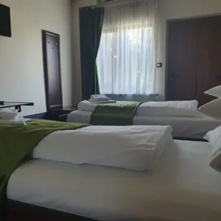
Fotografie a locației · Sursa fotografiei Arad · Bed & Breakfast
Pensiunea Mystique Arad
Pensiunea Mystique Arad. Două familii cu copii au ales Mystique după un drum lung și au remarcat spațiul din camere și felul în care le-a primit gazda.
Strada Vrancei 49, 310315 Arad+40 740 235 635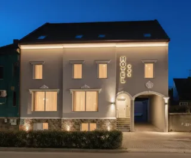
Fotografie a locației · Sursa fotografiei Arad · Hotel
HOTEL MANTRA
HOTEL MANTRA. La Mantra, terasa și parcarea de la proprietate merită văzute împreună dacă plănuiți o întâmpinare înainte de plecarea spre ceremonie.
Calea Victoriei 2c, 310158 Arad+40 779 219 203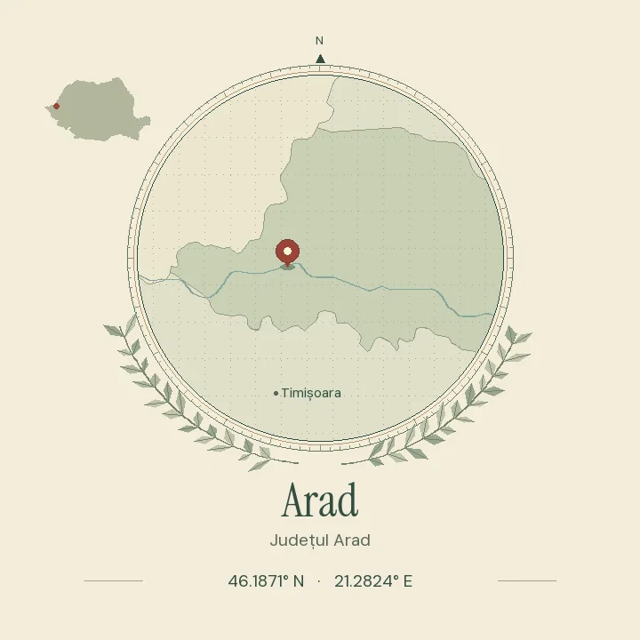
Hartă ilustrată Arad · Hotel
La Conac Arad
La Conac Arad, un oaspete apreciază ograda cu terasă și zone de agrement, dar nu a fost mulțumit de camera în care a petrecut trei zile.
Str. Sfântul Nicolae nr. 9, 310375 Arad+40 740 021 123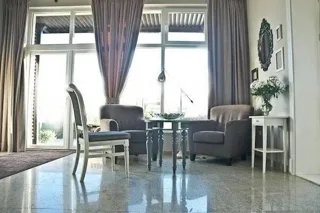
Fotografie a locației · Sursa fotografiei Arad · Bed & Breakfast
Pensiunea Belanco Arad
Pensiunea Belanco Arad, Arad. Pentru un grup care vine la Arad după ore diferite, cere o procedură actuală de predare a cheilor.
Strada Cocorilor 36, 310426 Arad+40 747 880 965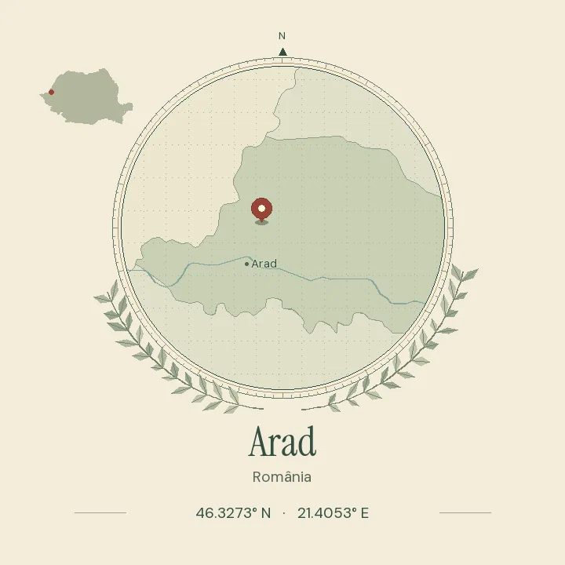
Hartă ilustrată Zona Șimand · Local pentru evenimente
Domeniul Lupas
Domeniu cu lac, păuni și lebede lângă DN79, Arad. Recenzii 2026 împărțite: taxe de bar și prăjituri, aperitive și cazare criticate.
DN79+40 757 734 602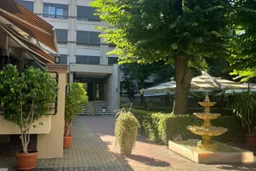
Fotografie a locației · Sursa fotografiei Arad · Hotel
Best Western Hotel Central
Un oaspete revenit la Best Western Hotel Central din Arad amintește de parcarea păzită, de camerele mari și de mesele luate la hotel.
Strada Horia 8, 310018 Arad+40 257 256 636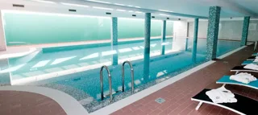
Fotografie a locației · Sursa fotografiei Arad · Hotel
Leon Hotel
Leon Hotel. La Leon în Arad apare într-o recenzie experiența unui părinte preocupat de condițiile în care își însoțea copilul la o ședință de înot.
Bulevardul Nicolae Titulescu nr. 5, 310328 Arad+40 357 100 400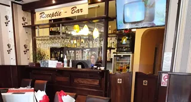
Fotografie a locației · Sursa fotografiei Arad · Pensiune
Pensiunea Select Arad
Pensiunea Select Arad, Arad. Pentru invitații care sosesc după ce se termină programul nunții, aceste detalii sunt utile.
Calea Radnei 117, 310267 Arad+40 357 429 485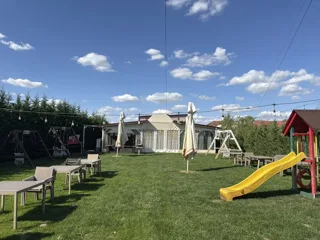
Fotografie a locației · Sursa fotografiei Arad · Pensiune
Pensiunea La Cuscri
Pensiunea La Cuscri. Dacă doriți o formulă similară, discutați cu responsabilul de sală ce piese de decor intră în ofertă și cine le strânge la final.
Calea Bodrogului 20, 310059 Arad+40 771 449 599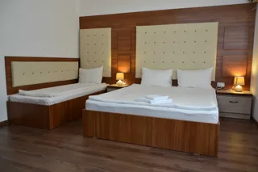
Fotografie a locației · Sursa fotografiei Arad · Pensiune
Pensiunea Alexander - Cazare Arad
Pensiunea Alexander - Cazare Arad, Arad. Dacă luați în calcul curtea pentru o întâlnire de familie, vizitați și o cameră care dă spre ea.
Calea Radnei 175, 310291 Arad+40 728 009 656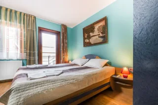
Fotografie a locației · Sursa fotografiei Arad · Bed & Breakfast
Pensiunea Christiana
Pensiunea Christiana. Pentru familia care a stat două zile la Christiana, camera triplă cu balcon și saltelele au fost detaliile memorabile.
Strada Abrud 2B, 310317 Arad+40 766 642 530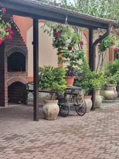
Fotografie a locației · Sursa fotografiei Arad · Bed & Breakfast
Pensiunea ELLA
Pensiunea ELLA. La Ella, un oaspete amintește primirea la o oră convenabilă, parcarea în incintă și posibilitatea de a comanda mâncare în cameră.
Strada Tribunul Corcheş 22, 310485 Arad+40 745 595 087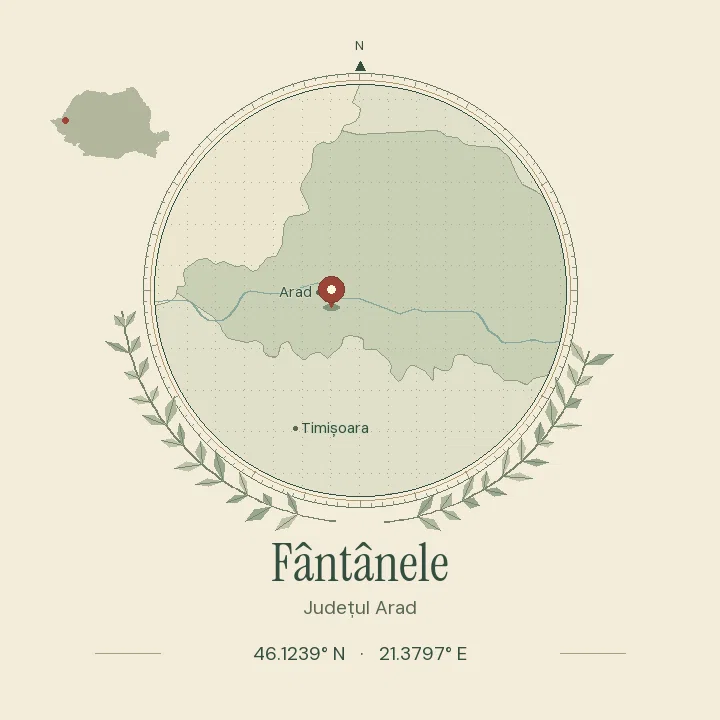
Hartă ilustrată Fântânele · Local pentru evenimente
Castelul Kövér-Appel
Reședință nobiliară reabilitată în Fântânele, Arad, cu salon și grădină umbroasă; 4,5 din 138 de evaluări. Întrebări pentru o nuntă aici.
Strada Principală 116, 317120 Fântânele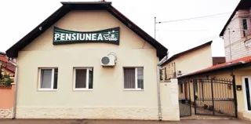
Fotografie a locației · Sursa fotografiei Arad · Bed & Breakfast
Pensiunea Bella Arad - Cazare Arad
Pensiunea Bella Arad - Cazare Arad, Arad. O persoană cazată la Bella în Arad descrie plata camerei în euro, la sosire.
Calea Radnei 201, 310269 Arad+40 722 275 550Fotografie a locației · Sursa fotografiei Arad · Hotel
Hotel Miky
Hotel pe Calea Radnei din Arad, cu două camere accesibile și parcare mare; potrivit pentru cazarea invitaților, fără nunți documentate.
Calea Radnei 231, 310292 Arad+40 748 071 071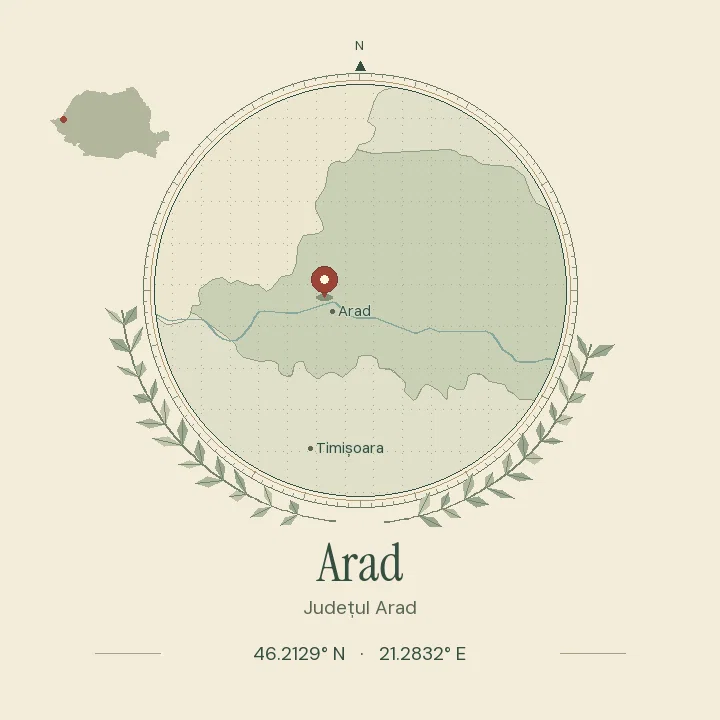
Hartă ilustrată Arad · Bed & Breakfast
Pensiunea Onalisa
Pensiunea Onalisa. Este experiența acelei familii, cu o implicație practică pentru un grup în care unii invitați traversează frontiera sau ajung seara târziu.
Strada Fagului 20, 310497 Arad+40 766 535 318Fotografie a locației · Sursa fotografiei Arad · Hotel
Hotel Crisana Arad
Hotel Crisana Arad, Arad. La Crișana, un oaspete din Arad descrie micul dejun drept variat și camerele drept spațioase.
Strada Petru Rareș 24, 310206 Arad+40 720 000 750Fotografie a locației · Sursa fotografiei Arad · Hotel
Hotel Continental Forum Arad
Hotel pe Bulevardul Revoluției din Arad, cu saloane de până la 300, 220 și 160 de locuri. Ce reclamă oaspeții la cazare și ce să ceri la ofertă.
Revolutiei Boulevard 79-81, 310130 Arad+40 372 578 800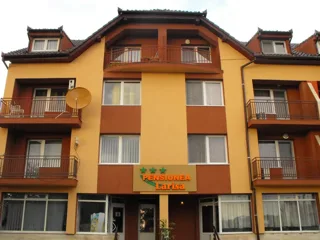
Fotografie a locației · Sursa fotografiei Arad · Pensiune
Pensiunea Larisa
Pensiunea Larisa. Un oaspete de la Larisa a folosit tramvaiul pentru a ajunge în zona centrală a Aradului și descrie călătoria în funcție de numărul stațiilor.
Strada Ștefan cel Mare 13A, 310237 Arad+40 745 203 566Fotografie a locației · Sursa fotografiei Arad · Hotel
Hotel Iris Arad
Hotel Iris Arad. O clientă de la Iris Arad a plecat prea devreme pentru micul dejun și își amintește mai ales de ajutorul primit la recepție.
Strada Căpitan Ignat 1, 310054 Arad+40 745 558 347
Întrebări despre locațiile din județul Arad
Unde pot dormi invitații în județul Arad?
În registrul de cazare SITUR găsim Pensiunea Damir - Cazare Arad - Pensiune Arad (16 locuri de cazare), Grant Hotel Boutique (20 de locuri de cazare), Pensiunea Nimbus (11 locuri de cazare). Verifică ce camere sunt libere pentru noaptea evenimentului.
Ce proprietăți din județul Arad au grădină sau terasă?
Pensiunea Damir - Cazare Arad - Pensiune Arad (terasă); Grant Hotel Boutique (terasă); Pensiunea Mystique Arad (grădină, terasă). Cere administratorului condițiile de folosire pentru o petrecere privată.
Care locație din județul Arad are cele mai multe evaluări Google?
Hotel Continental Forum Arad are 3.273 de evaluări în profilul Google folosit la documentare. Evaluările acoperă și alte experiențe la proprietate, inclusiv vizitele fără eveniment.
Unde apare o intrare accesibilă în județul Arad?
Profilurile Google indică o intrare accesibilă la Domeniul Lupas, Castelul Kövér-Appel. Pentru o cununie în exterior, cere detalii despre traseul dintre intrare și zona cu scaune.